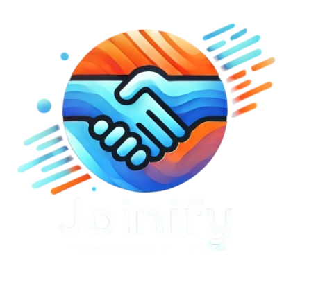

<footer class="footer">
    <div class="container footer-container">
        <div class="footer-content">
            <div class="footer-logo">
                
                <h3>Joinify</h3>
            </div>
            <p>Conectando personas, construyendo comunidades</p>
        </div>

        <div class="footer-links">
            <div class="footer-links-column">
                <h4>Compañía</h4>
                <a href="#">Sobre nosotros</a>
                <a href="#">Contacto</a>
                <a href="#">Carreras</a>
            </div>
            <div class="footer-links-column">
                <h4>Recursos</h4>
                <a href="#">Blog</a>
                <a href="#">Documentación</a>
                <a href="#">Soporte</a>
            </div>
        </div>

        <ul class="social-links">
            <li>
                <a href="#">
                    <svg xmlns="http://www.w3.org/2000/svg" width="24" height="24" viewBox="0 0 24 24" fill="none" stroke="currentColor" stroke-width="2" stroke-linecap="round" stroke-linejoin="round">
                        <path d="M18 2h-3a5 5 0 0 0-5 5v3H7v4h3v8h4v-8h3l1-4h-4V7a1 1 0 0 1 1-1h3z"></path>
                    </svg>
                    Facebook
                </a>
            </li>
            <li>
                <a href="#">
                    <svg xmlns="http://www.w3.org/2000/svg" width="24" height="24" viewBox="0 0 24 24" fill="none" stroke="currentColor" stroke-width="2" stroke-linecap="round" stroke-linejoin="round">
                        <path d="M22 4s-.7 2.1-2 3.4c1.6 10-9.4 17.3-18 11.6 2.2.1 4.4-.6 6-2C3 15.5.5 9.6 3 5c2.2 2.6 5.6 4.1 9 4-.9-4.2 4-6.6 7-3.8 1.1 0 3-1.2 3-1.2z"></path>
                    </svg>
                    Twitter
                </a>
            </li>
            <li>
                <a href="#">
                    <svg xmlns="http://www.w3.org/2000/svg" width="24" height="24" viewBox="0 0 24 24" fill="none" stroke="currentColor" stroke-width="2" stroke-linecap="round" stroke-linejoin="round">
                        <path d="M16 8a6 6 0 0 1 6 6v7h-4v-7a2 2 0 0 0-2-2 2 2 0 0 0-2 2v7h-4v-7a6 6 0 0 1 6-6z"></path>
                        <rect x="2" y="9" width="4" height="12"></rect>
                        <circle cx="4" cy="4" r="2"></circle>
                    </svg>
                    LinkedIn
                </a>
            </li>
        </ul>
    </div>

    <div class="footer-bottom container">
        <p>© 2024 Joinify - Todos los derechos reservados</p>
    </div>
</footer>